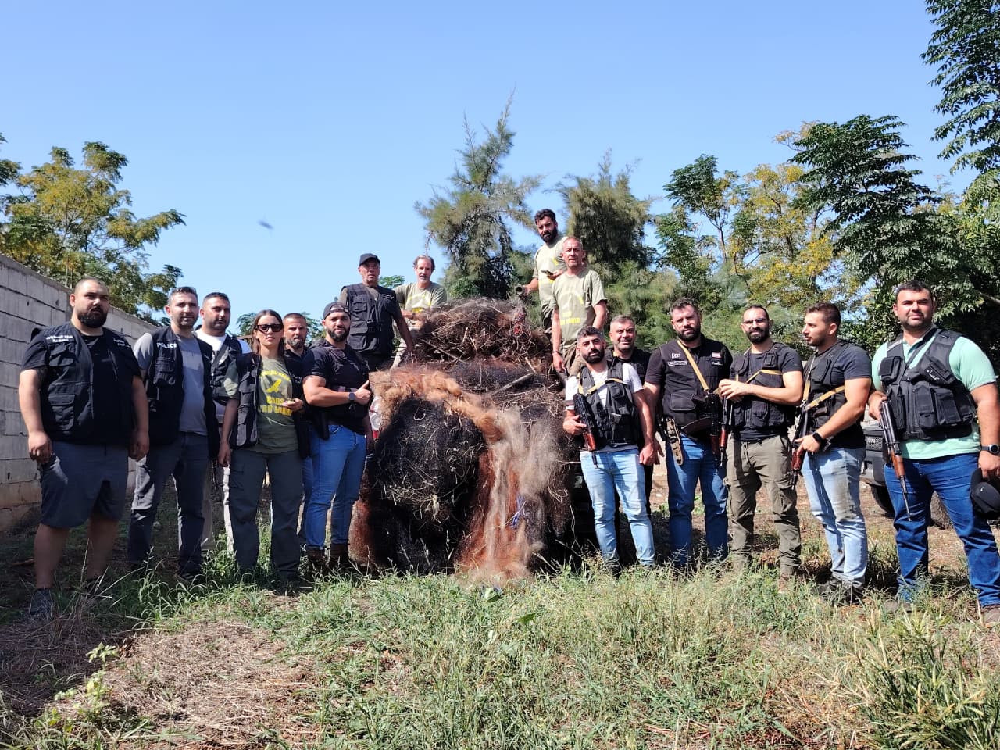
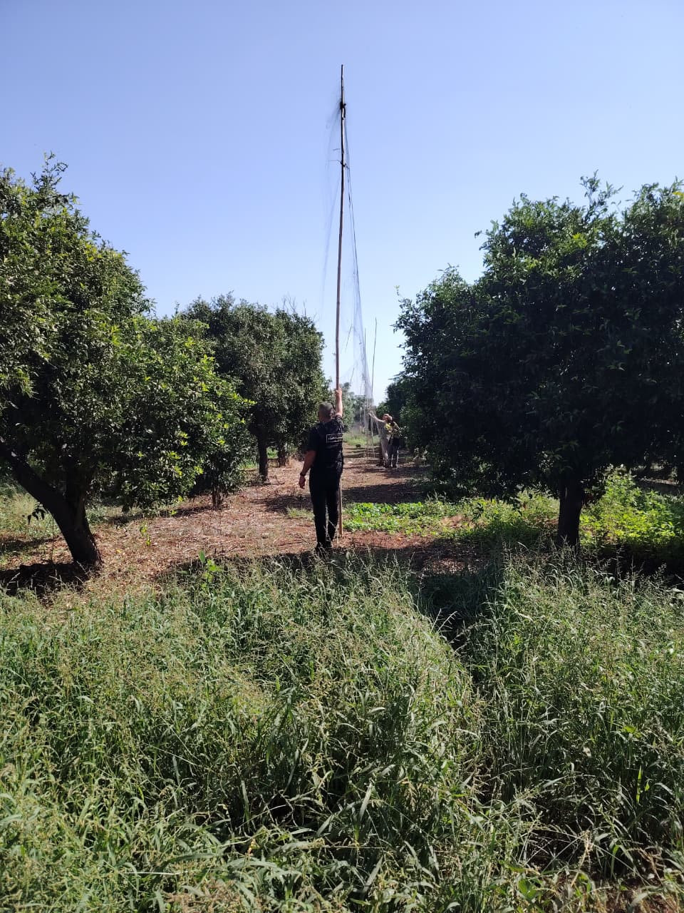
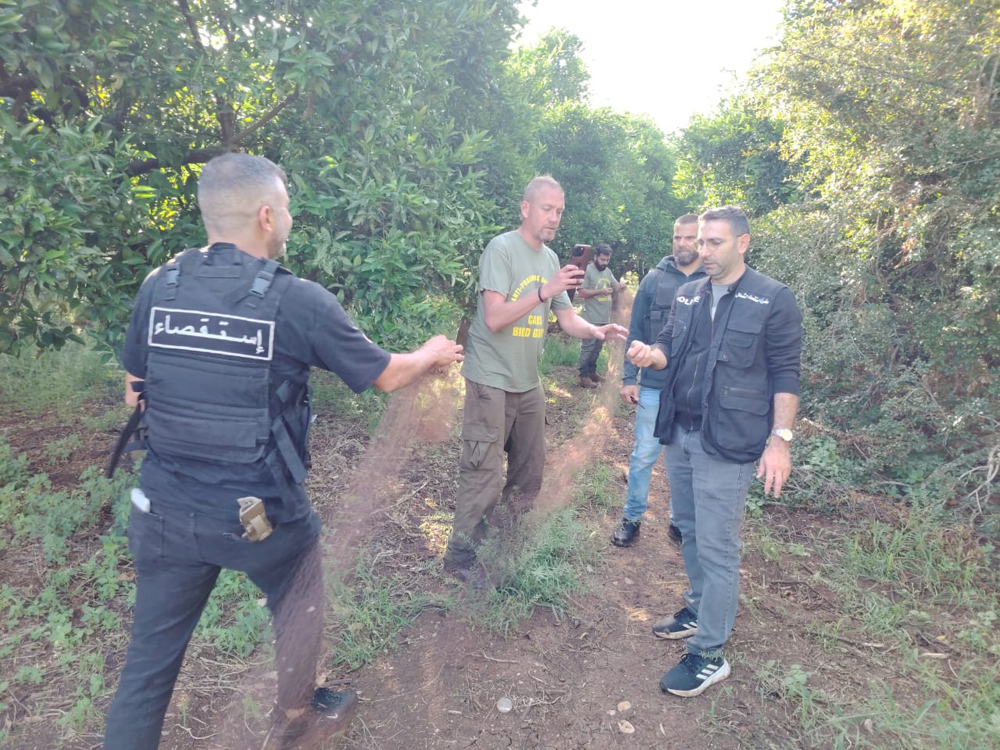
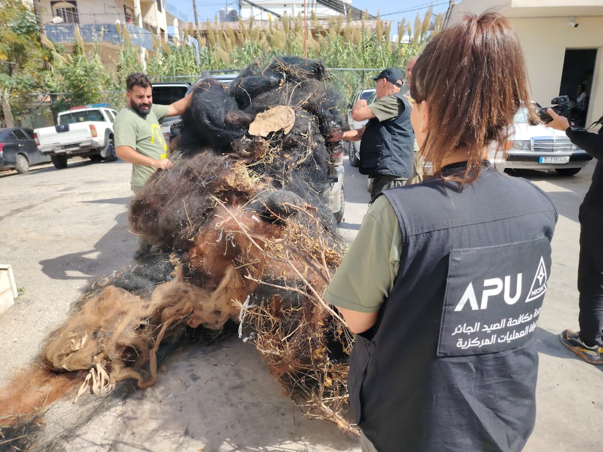

Net removals in northern Bekaa and northern Lebanon have reached a combined 63,030 square metres.
The Internal Security Forces’ Northern Investigation Detachment, working in the field and sharing information with the Anti-Poaching Unit’s joint operations team, removed 24,750 square metres of illegal hunting nets in northern Lebanon in just four hours.
The operation follows the removal of 38,280 square metres of nets in northern Bekaa, bringing the combined total for northern Lebanon and the Bekaa to 63,030 square metres.

High nets among the orchards
The density of the nets, their spread among orchards and their considerable height made removal a demanding field operation.
The operation was coordinated with the head of the command and control room for northern Lebanon, the head of the Northern Investigation Detachment and officers from the detachment. It involved the joint operations team of the Anti-Poaching Unit (APU), affiliated with the Middle East Center for Sustainable Hunting and Anti-Poaching (MECSHAP) and the Committee Against Bird Slaughter (CABS).

From the Bekaa to the north
The earlier campaign in northern Bekaa was carried out with the Internal Security Forces’ Bekaa Investigation Detachment and resulted in the removal of 38,280 square metres of nets.
The northern operation adds a further achievement to the cooperation between the Directorate General of the Internal Security Forces and the Anti-Poaching Unit team in protecting birds and nature in Lebanon.

Sources: Internal Security Forces: northern operation; Internal Security Forces: Bekaa total